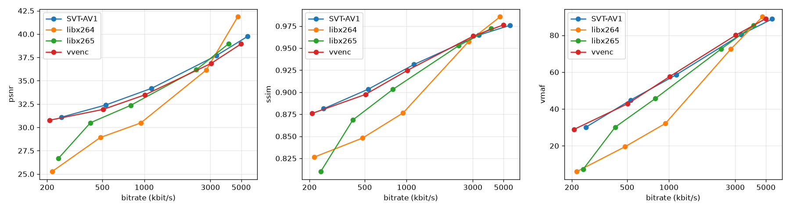
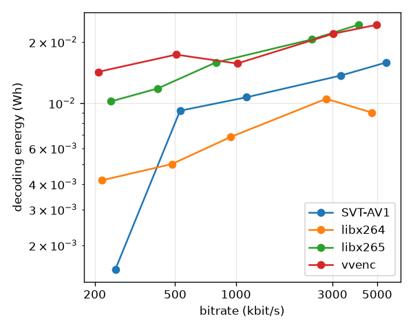

5 s clip of input.mp4 (1080p, 30 fps), encoded at 200k, 500k, 1M, 3M and 5M with
libx264, libx265, SVT-AV1 and vvenc (VVC, preset faster). Time and energy were
measured with CodeCarbon (energy on a Mac is only an estimate).
| HLS | DASH | |
|---|---|---|
| Manifest | .m3u8 (text playlist) | .mpd (XML) |
| Segments | .ts / fMP4 | .m4s (fMP4) + init.mp4 |
| Standard | Apple, proprietary | ISO/MPEG, open |
| Browser support | Native on Safari/iOS, else hls.js | Needs dash.js (not on iOS) |
| Codecs | Mostly H.264/HEVC | Any codec |



